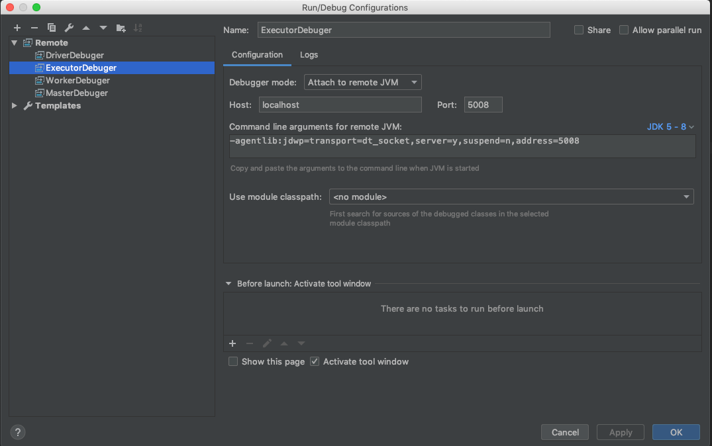
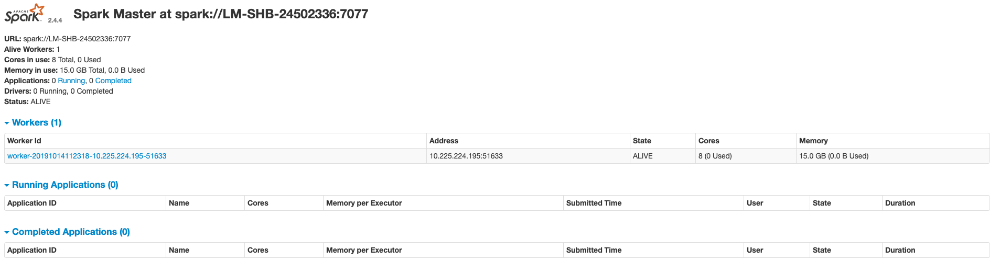

Debug in IDEA
We will submit SparkPi to simple Spark Standalone Cluster(one master + one worker) in client deploy mode. Utilize IDEA Remote debugger, we will go through the lifecycle of a spark applicaiton.
Before we start, let's copy the original words from 《Learning Spark 2015》- CHAPTER 7 "Running on a Cluster".
To summarize the concepts in this section, let’s walk through the exact steps that occur when you run a Spark application on a cluster:
- The user submits an application using spark-submit.
- spark-submit launches the driver program and invokes the main() method specified by the user.
- The driver program contacts the cluster manager to ask for resources to launch executors.
- The cluster manager launches executors on behalf of the driver program.
- The driver process runs through the user application. Based on the RDD actions and transformations in the program, the driver sends work to executors in the form of tasks.
- Tasks are run on executor processes to compute and save results.
- If the driver’s main() method exits or it calls SparkContext.stop(), it will termi‐ nate the executors and release resources from the cluster manager.
Step1: clone source code and import into IDEA
$ git clone git@github.com:apache/spark.git spark-source-code
$ cd spark-source-code
# default is master brach which is 3.0.0 version, checkout to branch-2.4
$ git checkout --track origin/branch-2.4
# Open IDEA => Import project from existed source
Spark is mainly written in Scala and you use different build tools like
maven/sbt/gradle, we will usemavenhere.
Wait for IDEA downloaded all dependencies via maven ...
Step2: configure IDEA Debugger
Then add four Remote Debugger like below (Run => Edit Configuration).

You should set different and avaliable(not in bind already) ports for Debuggers to listen (default 5005). In our cases,
MasterDebugger => 5005
WorkerDebugger => 5006
DriverDebugger => 5007
ExecutorDebugger => 5008
Next, copy conf/spark-env.sh.template to a new environment variable configure file conf/spark-env.sh and add lines below to enable these Debuggers.
# conf/spark-env.sh
SPARK_MASTER_OPTS="-agentlib:jdwp=transport=dt_socket,server=y,suspend=n,address=5005 -Dspark.master.rest.enabled=true"
SPARK_WORKER_OPTS="-agentlib:jdwp=transport=dt_socket,server=y,suspend=n,address=5006"
SPARK_SUBMIT_OPTS="-agentlib:jdwp=transport=dt_socket,server=y,suspend=y,address=5007"
Step3: start a simple Spark Standalone Cluster
$ sbin/start-all.sh
starting org.apache.spark.deploy.master.Master, logging to /xxx/spark-2.4.4-bin-hadoop2.7/logs/spark-geluo-org.apache.spark.deploy.master.xxx.out
localhost: starting org.apache.spark.deploy.worker.Worker, logging to /xxx/spark-2.4.4-bin-hadoop2.7/logs/spark-geluo-org.apache.spark.deploy.worker.Worker-1-xxx.out
# access web UI of Spark Master at http://localhost:8080

Step4: submit SparkPi
Start MasterDebugger and WorkerDebugger in IDEA.
$ ./bin/spark-submit --class org.apache.spark.examples.SparkPi \
--master spark://localhost:7077 \
--conf spark.executor.extraJavaOptions="-agentlib:jdwp=transport=dt_socket,server=y,suspend=n,address=5008" \
--executor-memory=2G --total-executor-cores=2 \
examples/jars/spark-examples_2.11-2.4.4.jar 20
Listening for transport dt_socket at address: 5007
# spark://localhost:7077 is the default master url(traditional RPC gateway) of Spark Master
# --deploy-mode default is client
# since we configure "suspend=y" only for DriverDebugger JVM parameter above, this app wouldn't lanuch until DriverDebugger started
bin/spark-submitandsbin/start-all.shwill both callbin/spark-classinside
lanuncher => java => Main is the entrance class used inside bin/spark-class to build cmd string.
可以发现 conf/spark-env.sh 中设定的2个环境变量,
SPARK_MASTER_OPTS&SPARK_WORKER_OPTS是生效的.
- For Spark Master,
java -cp 'xxx' -agentlib:jdwp=transport=dt_socket,server=y,suspend=n,address=5005 -Dspark.master.rest.enabled=true -Xmx1g org.apache.spark.deploy.master.Master --host LM-SHB-24502336 --port 7077 --webui-port 8080. - For Spark Worker,
java -cp 'xxx' -agentlib:jdwp=transport=dt_socket,server=y,suspend=n,address=5006 -Xmx1g org.apache.spark.deploy.worker.Worker --webui-port 8081 spark://LM-SHB-24502336:7077.
SPARK_EXECUTOR_OPTS是无效的环境变量, 虽然它依旧保留在SparkClassCommandBuilderswitch-case 分支中，但是 executor 进程的启动不是通过bin/spark-class, 如下 Work 日志中所示 .
19/10/10 21:56:05 INFO ExecutorRunner: Launch command: "java" "-cp" "/xxx/spark-2.4.4-bin-hadoop2.7/conf/:/xxx/spark-2.4.4-bin-hadoop2.7/jars/*" "-Xmx2048M" "-Dspark.driver.port=59711" "org.apache.spark.executor.CoarseGrainedExecutorBackend" "--driver-url" "spark://CoarseGrainedScheduler@192.168.0.7:59711" "--executor-id" "0" "--hostname" "192.168.0.7" "--cores" "2" "--app-id" "app-20191010215605-0000" "--worker-url" "spark://Worker@192.168.0.7:59617"
For bin/spark-submit, use SparkSubmitCommandBuilder instead of SparkClassCommandBuilder here. Build cmd result looks like:
java -cp 'xxx' -agentlib:jdwp=transport=dt_socket,server=y,suspend=y,address=5007 -Xmx1g org.apache.spark.deploy.SparkSubmit
# same arguments which we pass to spark-submit above
--master spark://LM-SHB-24502336:7077
--conf spark.executor.extraJavaOptions=-agentlib:jdwp=transport=dt_socket,server=y,suspend=n,address=5008
--class org.apache.spark.examples.SparkPi
--executor-memory 2G --total-executor-cores 2
examples/jars/spark-examples_2.11-2.4.4.jar 20`.
# SPARK_SUBMIT_OPTS works here too.
Step5: Ready !
You can set breakpoints in IDEA and start to debug source code of Spark now.
core => scala => deploy => SparkSubmit is the entrance class of spark-submit.
// line 929
submit.doSubmit(args)
// line 76
def doSubmit(args: Array[String]): Unit = {
// 构造 SparkSubmitArguments 对象 ( 其过程中会进行参数验证 validateArguments() 等 )
val appArgs = parseArguments(args)
appArgs.action match {
case SparkSubmitAction.SUBMIT => submit(appArgs, uninitLog)
case SparkSubmitAction.KILL => kill(appArgs)
case SparkSubmitAction.REQUEST_STATUS => requestStatus(appArgs)
case SparkSubmitAction.PRINT_VERSION => printVersion()
}
// 默认为 SUBMIT action 即正常提交
// --kill 和 --status 分别对应 KILL & REQUEST_STATUS action, 仅在 standalone + cluster mode 下生效, 并且后面的参数为submitted driver id(如下)而不是常规的application id
// 19/10/15 12:46:41 INFO ClientEndpoint: Driver successfully submitted as driver-20191015124641-0000
// --version 对应 PRINT_VERSION action 调用 printVersion() 方法
// 当 没有参数 或 --help 或 无效参数时，都会调用 SparkSubmitArguments 的 printUsageAndExit() 方法打印用例说明并退出
// line 773
private def runMain(args: SparkSubmitArguments, uninitLog: Boolean): Unit = {
// prepareSubmitEnvironment 其实做了很多事情 (比如, 检查指定的cluster manager和deploy mode是否为支持的组合, e.g. spark-shel 和 spark-sql 就不支持 cluster mode)
// 虽然它最终只返回:
// 1. Driver 的参数, e.g. 20
// 2. Driver 的 classpath, e.g. /xxx/examples/jars/spark-examples_2.11-2.4.4.jar
// 3. 从参数和全局的 properties 中获取并构造SparkConf(这是下一步构造SparkContext的必要参数)
// 4. 包含 main 方法的入口类名 (如果是python application 或者cluster deploy mode，那该类名不同步--class所指定的),
// e.g. standalone cluster mode 这里的类名将是 org.apache.spark.deploy.ClientApp
// e.g. yarn cluster mode 这里的类名将是 org.apache.spark.deploy.yarn.YarnClusterApplication
val (childArgs, childClasspath, sparkConf, childMainClass) = prepareSubmitEnvironment(args)
// 利用反射调用 入口类(child class) 的 main 方法
app.start(childArgs.toArray, sparkConf)
// core => scala => deploy => SparkApplication
// line 52
val sysProps = conf.getAll.toMap
sysProps.foreach { case (k, v) =>
sys.props(k) = v
}
//利用 JVM System Property 传递配置项 e.g spark.master = spark://localhost:7077
mainMethod.invoke(null, args)
examples => scala => SparkPi, invoke main function of Driver program.
object SparkPi {
def main(args: Array[String]) {
val spark = SparkSession
.builder
.appName("Spark Pi")
.getOrCreate()
// 构造 SparkSession, The entry point to programming Spark with the Dataset and DataFrame API.
// parallelize 创建了一个 RDD 经过 map (转换--transformation) 和 reduce (动作--action)
val count = spark.sparkContext.parallelize(1 until n, slices).map { i =>
val x = random * 2 - 1
val y = random * 2 - 1
if (x*x + y*y <= 1) 1 else 0
}.reduce(_ + _)
sql => core => scala => SparkSession
// line 901
def getOrCreate(): SparkSession = synchronized {
// line 926
val sparkContext = userSuppliedContext.getOrElse {
// line 935
// SparkSession 包含一个 SparkContext
SparkContext.getOrCreate(sparkConf)
// line 957
session = new SparkSession(sparkContext, None, None, extensions)
...
// 回到上面的 Driver 程序
// line 2520
// 如果找不到一个 active context (最多只有一个), 则构造一个新的 Spark Context
if (activeContext.get() == null) {
setActiveContext(new SparkContext(config), allowMultipleContexts = false)
// line 424
// 构造 SparkEnv, Holds all the runtime environment objects for a running Spark instance (either master or worker),
// including the serializer, RpcEnv, block manager, map output tracker, etc.
_env = createSparkEnv(_conf, isLocal, listenerBus)
// line 452
// 启动 WebUI
_ui.foreach(_.bind())
// 19/10/15 13:47:14 INFO Utils: Successfully started service 'SparkUI' on port 4040.
// 19/10/15 13:47:15 INFO SparkUI: Bound SparkUI to 0.0.0.0, and started at http://lm-shb-24502336.paypalcorp.com:4040
// line 493
// 构造 ScheduleBackend & TaskScheduler
val (sched, ts) = SparkContext.createTaskScheduler(this, master, deployMode)
// 构造 DAGScheduler
_dagScheduler = new DAGScheduler(this)
// 启动 TaskScheduler & ScheduleBackend (TaskScheduler包含一个ScheduleBackend和DAGScheduler的引用--reference)
_taskScheduler.start()
// 启动之后, Spark Master Web UI http://localhost:8088 Running Application 可以看到 SparkPi 的 RUNNING State 的记录
// BlockManager
_env.blockManager.initialize(_applicationId)
// MetricSystem
_env.metricsSystem.start()
// Dynamic Allocation
val dynamicAllocationEnabled = Utils.isDynamicAllocationEnabled(_conf)
// 未开启 None
_executorAllocationManager.foreach(_.start())
...
// SparkContext 构造完了, 回到上面的 SparkSession 构造过程